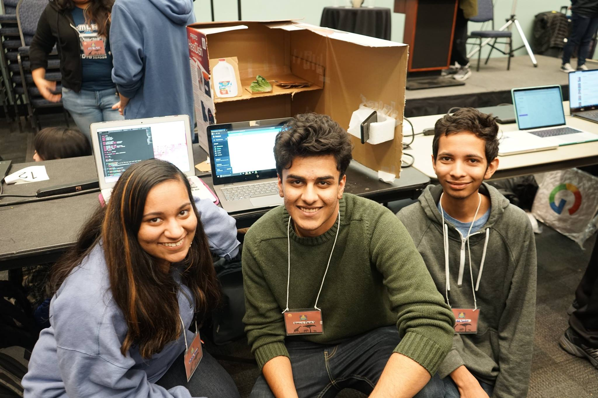

Smart Fridge Of Greatness
This project was created for SB Hacks 2018. See the devpost here!.
Smart Fridge of Greatness is an Internet of Things (IOT) based fridge that can suggest recipes based on what is inside of your fridge. When an user wants to know what they can make, they simply take a picture of the contents of their fridge. The system uses a Machine Learning image recognition algorithm to determine the various ingredients and stores it on Firebase. The specific API used is Clairifai, which gives us a list of probabilites of potential classifications. We choose the highest probability as the ingredient.
After we parse the ingredients, we use the RecipePuppy API to create a database of recipes on Firebase. This is then turned into a list to be displayed on the Android application for easy browsing. The contents of each individual's fridge are still protected by an authenticated username and password system in order to ensure the safety and privacy of our users. Potential future features would be integrating with Amazon's Alexa so the user could simply ask Alexa "what can I make for dinner". We would also want to limit the potential of blurry or unusable photos.